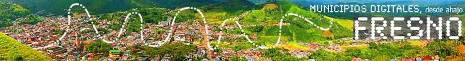

<<INICIO
Para el proyecto Fresno - Tolima, un municipio digital, este material se comenzó a recuperar durante la celebración de los 150 ños de fundación del municipio y se recopiló en un CD ROM conmemorativo que se puso a disposición de los asistentes a la celebración. Después de los eventos de la celebración, esa misma información se está cargando en distintos servidores de la red local de forma tal que pueda ser utilizado como parte del proceso educativo local (en el proceso será actualizado permanentemente) pues quedará disponible como material de referencia para todos los interesados en conocer sobre el Fresno.
Contenidos locales
Crear contenidos locales recuperando el patrimonio cultural: imágenes, música, literatura, historia, geografía, artes plásticas, y otras manifestaciones culturales del municipio que se pueden recuperar en un CD-ROM y además cargar en servidores.Para el proyecto Fresno - Tolima, un municipio digital, este material se comenzó a recuperar durante la celebración de los 150 ños de fundación del municipio y se recopiló en un CD ROM conmemorativo que se puso a disposición de los asistentes a la celebración. Después de los eventos de la celebración, esa misma información se está cargando en distintos servidores de la red local de forma tal que pueda ser utilizado como parte del proceso educativo local (en el proceso será actualizado permanentemente) pues quedará disponible como material de referencia para todos los interesados en conocer sobre el Fresno.
- CD - ROM conmemorativo
- Fresno, día a día
- Proyectos académicos en marcha
- Páginas de instituciones locales